设置系统¶
设置系统的目标是提供一个模块化框架，能够以完全解耦的方式控制设置逻辑（通过设置管理器（Setting Manager））与设置选择（通过设置控件（Setting Widget））。
下面的章节将概述该系统各部分的工作方式，之后的章节会涉及更具体的主题，例如向系统添加或移除设置。
系统概览¶
设置管理器¶
设置管理器是一组组件的集合，每个组件包含某一项具体设置的逻辑与数据：其名称、选项、如何保存/加载、如何应用等。这些管理器在 Begin Play 时由系统初始化，并且完全独立于任何 UI。
你可以在 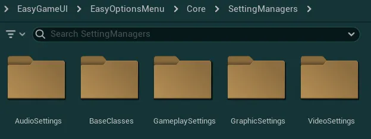EasyGameUI/EasyOptionsMenu/Core/SettingManagers 文件夹中找到所有现有的管理器，它们按类别分组，其中 BaseClasses/ 包含主类。

你主要会遇到三种类型的管理器，每种各控制一种“主类型”的值（int、float、bool）：
Selector Manager / Slider Manager / Toggle Manager
这些管理器各自都有一组标准变量，用于定义该设置的基础配置（名称、描述、选项等），以及一组可重写的函数，用于实现该设置的功能。
关于如何配置这些参数和管理器的更多细节将在下一节中给出。
设置控件¶
设置控件用于让玩家以可控的方式修改任意设置管理器；控件完全独立于管理器，这意味着管理器可以在没有任何关联控件的情况下存在，多个系统中的多个控件也可以指向同一个管理器。设置控件也可以在不关联管理器的情况下放置，用于不需要跨游戏会话保存的“临时”设置。
每种管理器都有一种关联的控件类型（这些控件可在 EasyGameUI/Core/CommonWidgets/SettingsWidgets 文件夹中找到）：
Setting Selector / Setting Slider / Setting Toggle
设置控件的基本配置非常简单：你可以将它关联到一个设置管理器，也可以为它提供 Setting Data（当该设置为局部设置、不需要管理器时）。此外还有一些附加配置，例如状态规则、可见性、应用参数等。
关于所有这些参数以及如何配置控件的更多细节将在下一节中给出。
系统辅助功能¶
该系统还提供了若干辅助函数/宏，用于对设置进行安全的读/写访问（每种管理器各有一个），在从外部系统接入时应优先使用它们： 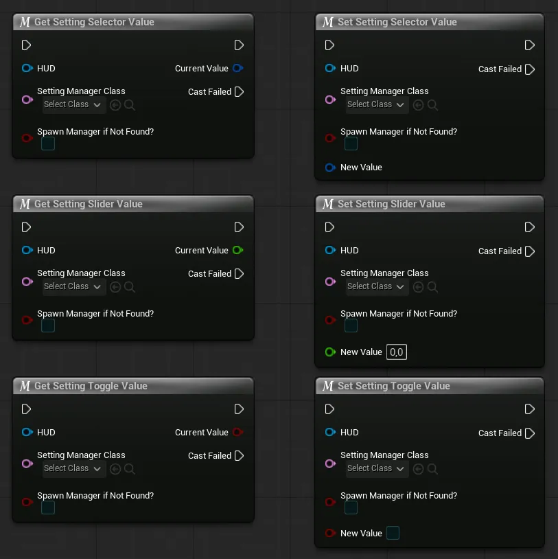

你也可以直接获取管理器的引用并调用其上的函数（在频繁调用时这样更好）： 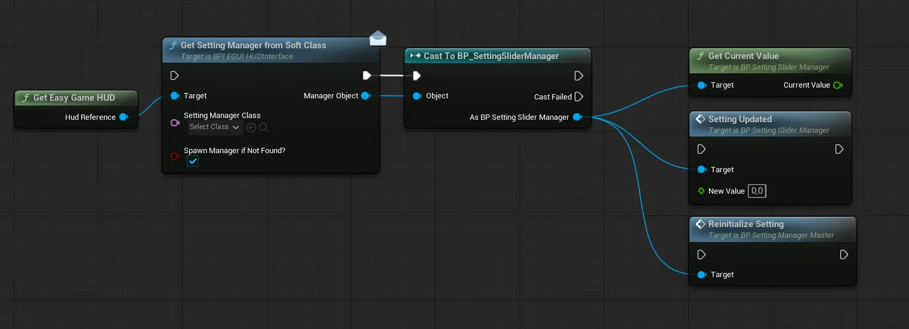

Get Current Value若想从指定管理器获取当前设置值，可调用此函数
Setting Updated调用此函数可强制为设置设定一个新值，调用它能确保该值被管理器正确记录并应用
Reinitialize Setting若需要完全重新初始化某个设置，可调用此函数；通常不需要这样做，除非你需要重新触发初始化流程，以根据新的外部数据刷新该设置
向任意系统添加新设置¶
操作步骤
要添加新设置，首先需要明确该设置的用途：
A. 设置新的设置管理器¶
-
要创建新的设置管理器，请打开内容浏览器并创建一个新蓝图，然后在出现的
Pick Parent Class窗口中搜索Setting Manager -
你会看到一个包含多种对象的列表，其中 3 个可根据需要选用：
BP_SettingSelectorManager用于需要多个任意可选值的设置的管理器（分辨率、窗口模式、画面设置）BP_SettingSliderManager用于需要数值范围的设置的管理器（帧率上限、fov、伽马）BP_SettingToggleManager用于只能开启或关闭的设置的管理器（布尔设置）
-
设置管理器创建完成后，为其命名，打开它并查看
Details选项卡所有管理器类型都有一个
Setting Data变量，其中包含该设置的基础配置参数，它的第一个分组名为Common Setting Data，需要你进行配置Unique Setting Name该管理器供系统使用的唯一名称（必须与任何其他管理器完全唯一）。这也将是保存到磁盘时使用的名称Setting Display Title在使用此设置管理器的任何设置控件中显示的名称Setting Description提供给使用此设置管理器的设置控件的描述，以便在需要时于 UI 中显示
-
随后，根据你的管理器类，你会看到用于配置该设置的不同变量，可在下面的下拉列表中查看每个类的详细信息：
设置选择器变量
-
Default Value重置为默认值或首次初始化该设置时使用的默认值（必须是选项数组中的有效索引） -
Options Values用于显示所有可用选项的值数组，每个索引有两个输入项：-
Option Display Name可本地化的显示值 -
Option Culture Invariant Value可选值，不随本地化变化，可用于可靠地标识该选项 -
Additional Description用户选择该选项时显示的描述和/或图片（与控件配合使用时） -
Option State Tag选择该选项时该设置所应用的标签
（标签可用于动态启用/禁用其他设置控件，该系统将在设置控件配置部分更深入地介绍）
-
-
Output Value Increment如果出于任何原因需要递增返回的索引值，可以在此添加一个增量
设置滑块变量
-
Default Value重置为默认值或首次初始化该设置时使用的默认值（必须位于最小/最大范围内） -
Slider Bound Values该设置允许的最小/最大值 -
Offset Value使用键盘或手柄时数值的增量 -
Fractional Digits该值在设置控件中应显示的小数位数 -
Additional Description你希望根据滑块值显示的任何附加描述（与控件配合使用时）值必须从大到小添加，之后每条附加描述都会对应显示在所有大于或等于该值的数值上
示例：如果值为 0.6，系统将选择值为“0.5”的字段中设置的附加描述
如果你只想显示一条附加描述，只需为滑块的最低可能范围设置一个值即可
设置开关变量
-
Default Value该设置在恢复默认值或首次初始化时使用的默认值 -
Additional Description用于显示用户所选任意选项的附加描述数组。
对于开关类设置，只能设置两个描述：索引 0 对应 False，索引 1 对应 True -
Off State Tag/On State Tag该设置关闭或开启时应用的标签
（标签可用于动态启用/禁用其他设置控件（Settings Widget），这一系统将在设置控件的配置章节中更深入地介绍）
-
-
现在你需要将设置管理器（Setting Manager）注册到系统中，为此，只需打开 Global Config 数据资源，并找到变量
Settings List在其中，只需向数组添加一个新条目，并填入你刚创建的设置管理器类
-
完成这项默认配置后，你的设置基本就绪：它会自动保存/加载，并且可以从任意系统控制，或通过设置控件（Setting Widget）控制，具体将在下一节介绍。
如果你想进一步扩展，还可以为管理器添加自定义逻辑来控制其行为（如何应用设置、如何保存/加载等），下一节将对此作更详细的说明。


设置管理器高级用法¶
要为设置管理器配置更高级的行为，你可以重写父类中的多个函数。
为此，在蓝图的 Functions 区域中按下 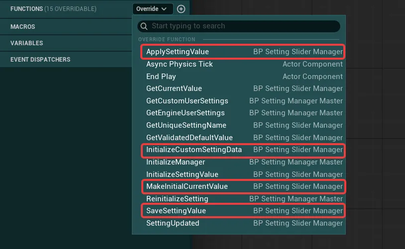Override 按钮，你将看到以下函数列表。红色描边的函数是可供重写的函数，它们将在下方紧接着介绍

对于基础配置，通常只需重写 Apply Setting Value 函数，它在设置需要被应用时调用（初始化时、通过代码或通过菜单）。其他函数则允许你在初始化和保存时设置更多逻辑。
-
Initialize Custom Setting Data该函数为管理器提供了一个机会，使其能在设置首次完全初始化之前处理任意数据。
在此函数中，你可以修改
Setting Data变量，例如根据外部来源的数据更新选项值，从而动态设置可用选项。用法示例
-
基于外部数据覆盖默认值：在
BP_SettingHardwareLumenRT（开关类设置管理器）中，首次初始化时会根据所选的画面预设覆盖默认值提示
HUD 函数
Get Is First Settings Initialization可用于你的任意逻辑中，以判断设置是否正在首次初始化，以及是否应覆盖画面预设（若需覆盖，画面预设的值将从 0 变化到 3：0 为低，3 为极高） -
基于外部数据动态填充选项值：在
BP_SettingScreenResolution（选择器类设置管理器）中，选项值会根据硬件支持的分辨率动态填充。在获取所有可用分辨率之后，我们直接覆盖该设置的选项值。
-
-
Make Initial Current Value该函数负责从 JSON User Settings 中加载给定变量（或设置其默认值），默认以管理器的类型加载该值，但如果你希望从其他来源加载或以特定类型加载，也可以重写它。
用法示例
大多数重写此函数的设置只是为了让其不使用 JSON User Setting（多数情况下是那些已由引擎处理的设置）
-
在
BP_SettingFramerateLimit（滑块类设置管理器）中，首次初始化时我们直接使用默认值并应用它。若不是首次初始化，我们只获取引擎已保存并应用的值（由于引擎在启动时已应用过该值，我们将Apply And save?设为 False，以免无谓地再次触发应用）提示
函数
Get Validated Default Value可用于你的任意逻辑中，以获取经过系统校验的所需默认值（确保该默认值有效，且落在该设置允许的选项范围内） -
在
BP_SettingScreenResolution（选择器类设置管理器）中，我们首先在Initialize Cusotm Setting Data中处理可用分辨率，并同时判断是否找到了有效的当前值。若找到则应用它，否则采用经过校验的默认值（此处默认值设为 99，因此会被限制到可用的最高分辨率） -
在
BP_SettingGlobalIllumination（选择器类设置管理器）中，若为首次初始化或预设被强制指定，我们只获取引擎已保存并应用的值，而不重新应用它。若不覆盖预设，则改为获取本地校验过的默认值。（预设覆盖来自 Global Config）
-
-
Apply Setting Value需重写的函数，用于将实际设置应用到游戏中，让你有机会在该设置请求新值时更新外部系统。
用法示例
-
在
BP_SettingMotionBlurQuality（选择器类设置管理器）中，我们使用该函数通过控制台命令更新动态模糊质量 -
在
BP_SettingUpscalingMethod（选择器类设置管理器）中，我们重写该函数使其不应用任何内容。这是一个特例：设置值实际由外部系统（Game HUD）读取并在那里应用，因此设置管理器在应用时不做任何事（在这种情况下，你完全可以不重写该函数，此处这样做只是为了说明其行为）
-
在
BP_SettingColorBlindnessIntensity（滑块选择器类管理器）中，我们使用该函数更新色盲参数，其具体逻辑会获取另一个设置的值以便将两者组合（并且，如果另一个管理器不存在，我们就直接中止设置，以避免可能的无限循环） -
在
BP_SettingGlobalIllumination（选择器类设置管理器）中，我们根据提供的值，通过引擎的用户设置系统应用该设置
-
-
Save Setting Value该函数负责将给定变量保存到 JSON User Settings，默认以管理器的类型保存该值，但如果你想以其他类型保存或使用其他保存方式，也可以重写它。


B. 创建新的设置控件¶
-
要创建新的设置控件，首先打开
WBP_EasyOptionsMenuMain控件（或你希望添加设置的任何其他控件）然后在控件编辑器中，点击你想要添加设置的容器，例如
GameplayOptionsContainer：
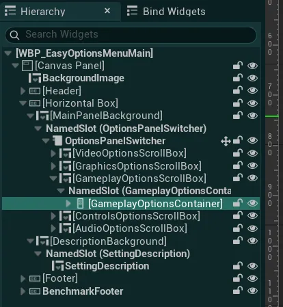
要更轻松地找到这些容器，可以在层级（Hierarchy）窗口的搜索栏中搜索OptionsContainer如何向选项菜单添加新的容器（标签页）
-
要添加新容器，选择现有 5 个滚动框（ScrollBox）中的一个（例如
VideoOptionsScrollBox）并复制它（Ctrl+D） -
重命名该滚动框及其内部的垂直框，然后删除其中已有的所有设置
-
然后，确保将新建的滚动框移到控件切换器（Widget Switcher）的末尾
-
点击 Header，在配置中向
Buttons List添加一个新按钮，并输入这个新标签页的名称注意：你可以通过重新排列该数组，按任意顺序放置这些标签页，但你也需要同步调整滚动框在控件切换器中的顺序，使其位置一致
-
-
然后，在
Palette标签页中，选择你的设置所需的控件类型-
Setting Selector用于需要用户从多个任意值中进行选择的设置（分辨率、窗口模式、画面设置）的控件 → 可与 Setting Selector Manager 配合使用
-
Setting Slider用于需要提供数值范围值的设置（帧率上限、FOV、伽马）的控件 → 可与 Setting Slider Manager 配合使用
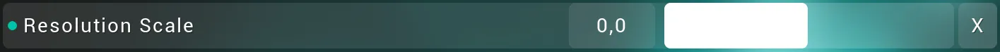
-
Setting Toggle用于只能在开与关之间切换的设置（布尔设置）的控件 → 可与 Setting Toggle Manager 配合使用
-
Setting Simple Button用于在点击简单按钮时触发操作的控件（例如 Run Benchmark 按钮）
-
-
将其放入容器后，转到
Details面板，在Easy Config分类下配置你的新设置你会看到 5 个可配置的变量“分类”，展开下列折叠项即可查看每一类的详细说明：
Setting Manager/Setting Data如果你之前已经设置了设置管理器并希望用此控件控制它，只需将其引用添加到
Setting Manager变量，然后就可以忽略Setting Data变量。不过，如果你不想或不需要使用设置管理器，则可以填写
Setting Data变量这些变量与设置管理器（Setting Manager）中使用的变量完全相同，你可以在此处查看每种类型的具体说明：设置选择器变量（Setting Selector Variables） / 设置滑块变量（Setting Slider Variables） / 设置开关变量（Setting Toggle Variables）
Locally Disable Setting/Setting Layout Preset这两个变量控制该设置的可见性与样式。
Locally Disable Setting变量可用于禁用此设置，使其在 UI 中隐藏；关于禁用设置的更多说明，请参阅下一节。Setting Layout Preset变量定义此设置所采用的布局样式，可在Global Styling Data Asset中进行配置。State Rules状态规则（State Rules）是一组条件参数，可让你根据其他设置的值来启用、禁用或隐藏某些设置。例如，当 VSync 启用时，你可以禁用控制帧率（Framerate）的那个设置。
为此，你首先需要在
State Tags变量中列出此设置将要考虑的所有状态标签。这些标签应与你在任意设置管理器或设置控件的Option State Tag变量中定义的标签保持一致。然后，你可以通过
Logic Mode变量定义该设置如何考虑这些标签：Match Any Tag只要列出的标签中任意一个处于激活状态，就会触发结果Matches All仅当列出的标签全部处于激活状态时，才会触发结果Match None仅当列出的标签全部未激活时，才会触发结果
接着，
Logic Outcome变量用于定义当逻辑规则成立时（例如某个标签已被其他设置激活），此设置需要执行什么操作Disable Setting禁用该设置，阻止对其进行任何编辑（但仍然可见）Enable Setting启用该设置，允许用户对其进行编辑Fully Hide Setting完全隐藏该设置，使其不可编辑且在 UI 中隐藏
最后，
Default State变量用于定义当逻辑规则不成立时，此设置需要执行什么操作
如有需要，你也可以通过 HUD 的以下函数从代码中添加或移除系统中的任意状态标签：
Graphic Preset在选项菜单中设置某项设置时，你可以自动将其注册为受图形预设（Graphic Preset）系统控制，设置选择器和设置开关均支持此功能。
要注册，只需将
Register for Graphic Preset?变量设为 True，然后在 `Graphic Preset Parameters 下输入每个预设应当设置的有效值。
对于设置选择器，有效值是其 Options 数组中存在的任意值。对于设置开关，有效值为 0 或 1Parameters参数（Parameters）类别中有几个可为此设置配置的附加变量：
Apply on Edit?变量控制该设置是否需要在用户做出更改后立即应用，或者是否必须由用户按下应用（Apply）按钮才会生效（请注意，取决于你的应用逻辑，这可能带来性能方面的负面影响）Show Reset Button?变量控制该设置是否显示一个独立的重置按钮


高级设置控件用法¶
若要为你的设置控件配置更高级的行为，你可以使用该控件上的多个基础函数与事件。你可以在 WBP_EasyOptionsMenuMain 中查看这些函数与事件的用法
-
Setting Updated每当玩家更新该设置时，都会调用此事件（如果启用了Apply on Edit，则每次更改时调用；否则每次应用该设置时调用）你可以从细节（Details）面板的事件（Events）类别中添加此事件（你的控件必须设置为变量）
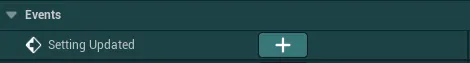
-
Apply Setting/Reset Setting调用这些函数将应用该设置（如果未启用Apply on Edit），或将其重置为默认值 -
Update Setting Value调用此函数可将设置更新为下一个或上一个值（对于设置滑块，会根据偏移值（Offset Value）递增或递减该值） -
Is Setting Enabled?此函数将返回该设置当前是启用还是禁用状态（禁用可能来自状态标签、可见性等原因）


除了这些函数之外，你还可以从设置向其所属控件接收多个事件。
为此，你首先需要将 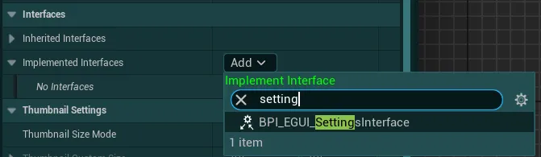BP_EGUI_SettingsInterface 添加到你的所属控件（类设置（Class Settings） > 接口（Interfaces））

然后，在你所选的任意设置上调用 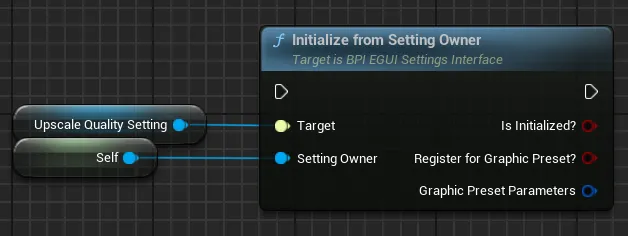Initialize from Setting Owner 函数。无需其他额外步骤，即可开始接收来自设置的以下事件

-
New Setting Dirty当任何已注册的设置被用户修改、并将其标记为待应用（dirty）时，会调用此事件 -
New Setting Focused当任何已注册的设置被用户聚焦时，会调用此事件 -
New Setting Description当任何已注册的设置请求显示其设置说明时，会调用此事件，可用于在 UI 中向用户展示该说明。


移除现有设置¶
要从系统中移除某项设置，你可以在两个层级上进行操作：
既可以完全禁用该设置管理器，从而在游戏和 UI 中彻底禁用它；也可以仅在 UI 中禁用它（对玩家隐藏），同时保持设置管理器处于激活状态（此时该设置仍会生效，但玩家无法对其进行配置）。
完全禁用设置管理器¶
要完全禁用该设置，首先找到你想禁用的设置管理器（这些管理器可在 EasyGameUI/EasyOptionsMenu/Core/SettingManagers 文件夹中找到）
例如全局光照（Global Illumination）设置： 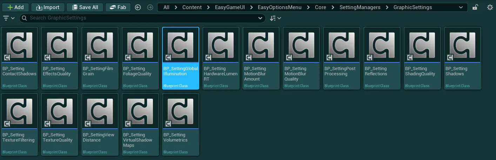

然后打开该管理器的蓝图并进入细节（Details）标签页，在其中找到 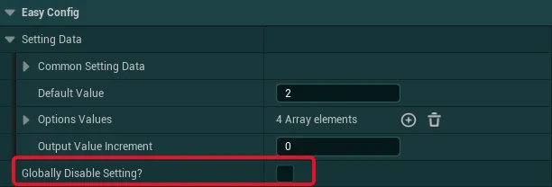Globally Disable Setting 变量并将其设为 True

将其设为 True 后，该设置将在游戏中完全禁用，不再出现在 UI 中，也不会有任何作用，除非你将该变量改回 False。
禁用设置控件¶
若只想在 UI 中禁用某项设置，请先打开 WBP_EasyOptionsMenuMain 控件（或你希望在其中禁用该设置的其他任意控件）
然后在控件编辑器中找到你想禁用的设置并选中它，例如全局光照（Global Illumination）设置： 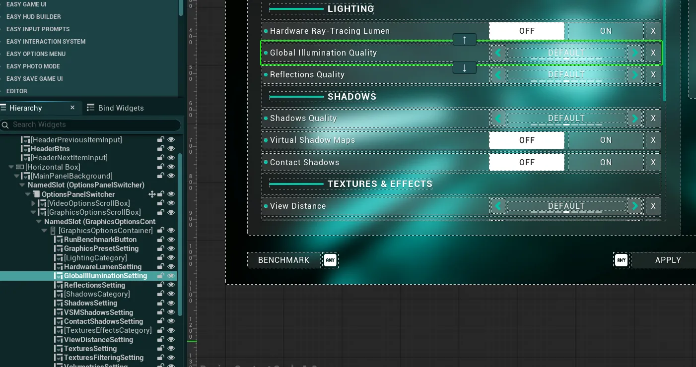

接着进入细节（Details）标签页，在其中找到 Locally Disable Setting 变量并将其设为 True

将其设为 True 后，该设置将在 UI 中被禁用，玩家看不到它；如果该设置关联到某个管理器，该管理器仍会处于激活状态，并且仍然可以修改该设置（例如在初始化期间或通过代码修改）。
从选项菜单中隐藏标签页¶
此外，你还可以从选项菜单中隐藏整个标签页，但请注意，这并不会禁用这些设置，只是将其在 UI 中隐藏起来：
要从选项菜单中隐藏标签页，请先打开 WBP_EasyOptionsMenuMain 控件并选中 Header

然后进入细节（Details）标签页，在其中可以禁用 Tabs Definition 变量中的任意标签页。
只需将目标标签页的布尔值 Disable Tab? 设为 True。